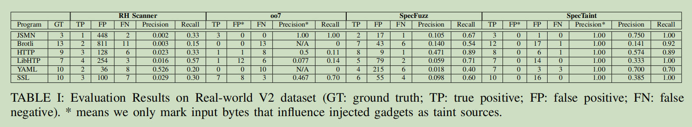
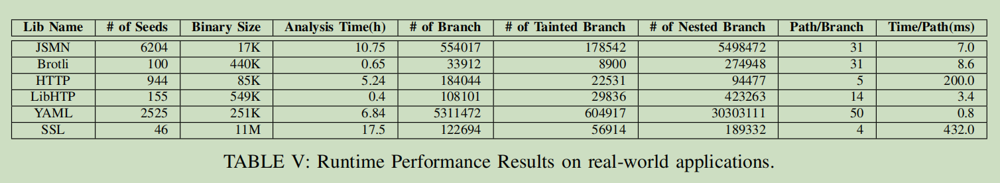
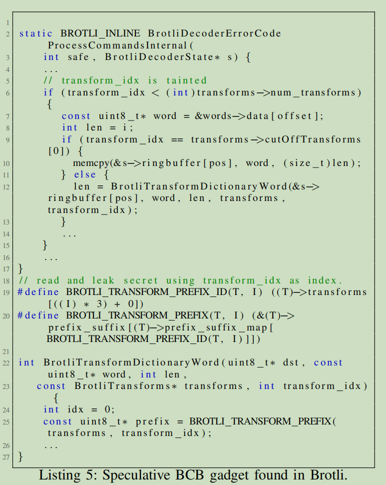

SpecTaint:Speculative Taint Analysis for Discovering Spectre Gadgets
1 摘要
软件补丁是用来对抗Spectre Attack的有效手段，他通过插入序列化指令来避免潜在Spectre gadgets中的预测执行。 但是，现在并没有有效的方法来检测Spectre gadget。 文章设计了一种新的Spectre gadget检测方法,通过在预测执行路径中进行污点分析。 在文章的末尾，我们通过CPU模拟器模拟并探索了预测执行。 我们实现了一个原型，叫做SpecTaint来证明我们方法的有效性。 我们在我们的Spectre样本数据集中对SpecTaint进行了评估，并与现存的最先进方法进行比较。 我们的实验结果表明SpecTaint在检测精度和召回率的表现远远超过了现有方法。 并且它还能在真实世界的应用如Caffe和Broftli中检测到新的Spectre gadgets。 此外，SpecTaint显著降低了补丁带来的性能损耗。
2 介绍
2.1 相关工作的问题
- Spectre V1 Scanner: 通过模式匹配进行检测。
- MSCV Spectre 1 pass：同上。
- Spectector：符号执行分析。
- oo7：静态污点分析。静态分析不精确，高假阳性，以及有时假阴。
- SpecFuzz：检测逻辑过于简单，导致高假阳和高假阴。 越界的内存访问可能并不是由用户控制，也不一定构成Spectre V1 gadgets。 Spectre V1 gadgets也不一定产生越界访问。 没能很好地处理Exception,导致错失可能的Spectre gadgets。
2.2 主要工作
- 设计了一种能对预测执行进行动态污点分析的平台，并根据该平台部署了一种语意学的spectre gadget检测工具。
- 通过将已知的Spectre gadgets插入现实世界的程序中来建立了样本库。
- 实现了原型SpecTaint,并且证明SpecTaint的有效性。
3 概述
3.1 系统结构
使用系统模拟器来模拟预测执行并对其进行动态污点分析。系统强制CPU模拟器执行预测路径，然后进行污点分析。
3.2 工作流程
工作分为2个阶段：正常执行阶段和预测执行阶段。正常执行阶段，SpecTaint通过外部模糊种子生成器来生成种子，并运行目标程序，来探索尽可能多的执行路径。 当遇到条件分支时，保存现有的运行状态为检查点，模拟预测执行。当预测执行窗口达到上限时。SpecTaint回滚到检查点。在预测执行阶段，一个Spectre gadget检测器对每个推测执行路径进行模式检查来检测gadgets。
3.3 威胁模型和应用范围
文章使用和其他检测工具相同的威胁模型。 也就是，文章的分析对象是良性但是是有漏洞的。文章并不处理恶意代码。 文章只处理Spectre V1,并从侧信道中泄漏信息，不考虑Meltdown。 文章只模拟二进制层中的Spectre V1 gadgets，不考虑模拟微操作，只考虑ROB的大小。
4 预测执行动态模拟
基于DECAF开发，基于虚拟机。
4.1 错误预测模拟
SpecTaint通过修改pc来修改跳转地址。 在跳转之前，保存成检查点。在模拟过程中，所有对内存发生修改的行为都会被记录。 当预测执行窗口达到上限时，模拟终止，回滚到检查点，或者发现序列化指令。
4.1.1 异常处理
SpecFuzz使用的异常处理方法比较简单，直接结束模拟，但是可能会丢失异常后的Spectre gadgets，因为大多数的CPU都不会在触发预测执行过程中的异常时中断。 相反，预测执行过程仍会继续。 SpecTaint在模拟过程中遇到异常时会强制继续模拟。
SpecTaint使用自定义的异常处理器来捕获预测执行过程中的异常。 当出现侵权异常时，SpecTaint会无视该异常，然后继续执行。 如果是跳转地址错误此类无法处理的异常，则会回滚到检查点。
4.2 预测执行路径探索
SE: Speculative Execution
NE: Normal Execution
SpecTaint以深度优先探索预测执行路径。
4.2.1 执行状态回滚
SpecTaint在分支前保存当前执行状态。 预测执行结束后使用保存的状态恢复。
SpecTaint持续追踪内存区域，当发生修改时保存原本的值。 SpecTaint使用动态污点追踪，因此还会记录执行过程中的污点信息。
4.2.2 路径探索
考虑2种路径覆盖率。
- 普通执行路径覆盖率：使用AFL来提高路径覆盖率。
- 预测执行路径覆盖率。
SpecTaint将条件分支视为从普通执行转化为预测执行的切换点。以深度优先遍历分支，每当进入一个新的分支，保存当前状态，并依次探索分支；当终止时，回滚到之前保存的状态，并继续执行下一条分支。
4.2.3 筛选路径
大多数路径爆炸是因为循环和递归函数。因此需要对路径进行筛选。SpecTaint限制同一条路径最有模拟5次。 因为在现实中，在重复进行一条分支多次后就不太会产生预测错误，5次就足够训练分支预测器。 该方法可能会遗漏gadgets。
5 检测
5.1 动态污点追踪
使用DECAF进行动态污点追踪分析。对NE和SE均进行动态污点追踪。 对NE使用动态污点分析是为了确保污点的传播。对SE进行动态污点分析是为了找出Spectre gadgets。 当SE结束时，污点信息也会被恢复，同时清除之前模拟过程中产生的污点信息。
5.2 Spectre Gadgets 模型
文章定义了2种类型的Spectre V1 gadgets。
- BCB: Bounds Check Bypass (BCB)
- BCBS: Bounds Check Bypass Store (BCBS)
定义：
- \(c\) 是条件分支指令。
- \(\tau(c)\) 表示为从 \(c\) 开始进行预测执行的指令集。
- \(m(i)\) 表示 \(i\) 是个内存读取指令。
- \(str(i)\) 表示 \(i\) 是个内存写入指令。
- \([i]\) 表示内存读取指令 \(i\) 读取的值。
- \(dep(i,j)\) 表示指令 \(i\) 数据依赖于 \(j\) 。
- \(t(i)\) 表示指令 \(i\) 的操作被污染。
- \(\delta\) 表示预测执行窗口的大小。
5.2.1 BCB
BCB gadgets 包含一系列数组操作，并且后一个数组的索引和上一个数组之间存在数据依赖。 但不是所有满足上述条件的就是BCB gadgets。BCB gadgets要求上一个数组的索引能够被控制。
BCB gadget定义：
\begin{equation} \Phi_{bcb}(c):=\exists i,j \in \tau(c).m(i)\wedge m(j)\wedge dep(j,[i])\wedge t(i)\wedge|c,j| < \delta \end{equation}翻译一下：
从分支指令 \(c\) 开始的预测执行指令序列中，存在内存读取指令 \(i,j\) ，且 \(j\) 数据依赖 \(i\) 的读取结果，并且 \(i\) 进行污点传播，同时 \(c\) 与 \(j\) 之间的距离小于窗口大小，分支指令 \(c\) 存在BCB gadget。
5.2.2 BSBS
在预测执行过程中对内存进行写入，通过控制数组索引，修改特定的内存数据，如返回地址。
BCBS gadget定义：
\begin{equation} \Phi_{bcbs}:=\exists i \in \tau(c),str(i)\wedge t(i)\wedge |c,i| < \delta \end{equation}5.2.3 Gadget 分类
文章的定义类似与oo7,但oo7认为分支应该被污染，并被输入控制。但分支预测的误导可以通过同一颗核心中的其他进程误导。 攻击者可以控制其他进程在相同的虚拟地址进行训练来实现误导。
文章考虑如下：
- 当预测执行被污点分支触发，则考虑进程内Spectre gadget。
- 否则，考虑为跨进程Spectre gadget。
5.3 Gadget 检测
gadget检测是用来检查预测执行过程指令追踪过程是否匹配gadgets模式。 文章只检查被标记为污点的内存访问指令。 我们对内存读取和写入指令进行插装。对内存读取指令，我们检查它的读取位置是否被污染。 对于BCB gadgets，为了确定指令的依赖，我们还需要追踪被标记的指令 \(j\) 是否由指令 \(i\) 传播而来。 对于BCBS gadgets，将被标记的内存写入操作的目标地址标记为污点。
7 实验
实验目的：
- SpecTaint在发现Spectre gadgets上的效率。
- SpecTaint在真实世界应用中发现Spectre gadgets的效率。
对比对象：
- Red Hat的Spectre 1 Scanner。
- oo7。
- SpecFuzz。
测试数据集：
- Spectre样本数据集，15个Spectre V1样本。
- SpecFuzz使用的数据集。
- 将Spectre gadgets注入到程序中。
评估标准：
- 对V1数据集，准确率公式为：
TP为手工验证为真的gadgets,FP为手工验证为假的gadgets。
- 对V2数据集，只考虑注入的Spectre gadgets,计算准确率和召回率。
7.1 V2数据集对比测试结果

与oo7相比，SpecTaint的FN和FP都要低，说明动态污点分析的准确率和效率都要优于静态污点分析。
SpecFuzz未能发现部分Spectre gadgets,原因大致有2点：
- SpecFuzz会对分支进行优先级判断，因此可能会导致遗漏部分的Spectre gadgets。
- SpecFuzz并不会处理非法内存访问等异常，因此会丢失部分在这些异常之后的Spectre gadgets。
7.2 V1数据集对比测试结果
SpecTaint检测得到的gadgets要小于SpecFuzz检测得到的。但是SpecFuzz的FP很高。 还有些gadgets位于循环中，它的预测会被纠正。
SpecFuzz也未能发现部分SpecTaint发现的Spectre gadgets。原因可能是因为SpecFuzz的fuzzing过程存在概率性，在fuzzing过程中没能触发内存错误。
7.3 补丁的性能开销
SpecTaint优于其他，因为它发现的gadgets更少，因此影响的范围更小。
7.4 分析效率

7.5 案例学习
SpecTaint发现了11条SpecFuzz未能发现的gadgets,其中有10条是可以利用的。

8 存在的问题
- 循环可能会将预测纠正，导致模拟时找到的gadgets并不能被利用。
- SEW太大，会导致部分gadgets不会被预测执行。
- 路径覆盖不完整。
- 控制依赖攻击。目前只考虑了用户输入作为数据流产生的Spectre gadgets.